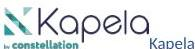
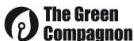
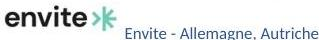

Écosystème
Notre réseau de partenaires vous accompagne sur tous vos projets. N'hésitez pas à les contacter de notre part, ils vous réserveront le meilleur accueil. Ou demandez-nous de vous mettre en relation avec celui qui vous correspond le mieux — nous le ferons avec plaisir.
France
Partenaires Bronze — France

Kapela
Kapela crée, modernise et maintient des applications métiers performantes et durables. Convaincue que le numérique doit concilier innovation, efficacité et responsabilité, Kapela intègre les principes d'éco-conception dès la conception des solutions et mesure concrètement leur impact environnemental grâce à son partenariat avec Greenspector.
Avec l'essor de l'intelligence artificielle, Kapela développe une approche centrée sur une IA utile, maîtrisée et responsable, au service de la performance des entreprises comme de la sobriété numérique. Notre ambition : être l'un des pionniers français de l'IA responsable appliquée aux services numériques.

The Green Compagnon
The Green Compagnon réunit 50+ experts du numérique responsable dans la première communauté française dédiée. Nous connectons les entrepreneurs NR aux entreprises engagées et proposons des formations pratiques sur-mesure et conseil d'experts. Rejoignez les 3000+ professionnels qui transforment déjà leur tech !
International
Partenaires Bronze — autres pays

Envite Consulting
Envite Consulting est un cabinet de conseil spécialisé dans les solutions informatiques durables. Nous permettons aux entreprises d'optimiser l'efficacité des ressources dans leur développement logiciel afin de minimiser leur impact environnemental.
Grâce à ses expertises en matière d'automatisation des processus métier, d'optimisation de l'architecture logicielle et de développement de logiciels, Envite Consulting encourage l'innovation technologique dans le respect de l'environnement, en créant des logiciels prêts pour l'avenir.
Technologie
Partenaires technologiques

Aguaro — empreinte carbone de l'IT
Aguaro est une plateforme SaaS qui offre aux responsables IT et ESG les moyens de piloter la réduction des coûts environnementaux de leur activité et d'influencer employés, clients ou fournisseurs.
En faisant levier sur les équipes terrain et les systèmes existants, les organisations sécurisent leurs objectifs et réduisent les risques, tout en faisant des économies et en étant plus robustes face à l'avenir.

DRI — hébergement responsable et souverain
DRI propose son expertise depuis plus de 20 ans en tant qu'hébergeur et infogéreur web français responsable et souverain. C'est aussi une société qui s'est construite autour de passions communes telles que l'Open source, l'empreinte environnementale et les nouvelles technologies.

Setelia — expertise sur tests de terminaux
Setelia est une ESN spécialisée dans les Telecom, l'IT et le Digital. Setelia accompagne ses clients Telecom en tant que laboratoire de tests.
Le partenariat avec Greenspector permet d'étoffer le portfolio Setelia avec une offre clé en main de benchmark technique sur tout type de devices connectés ou d'applications mobiles.